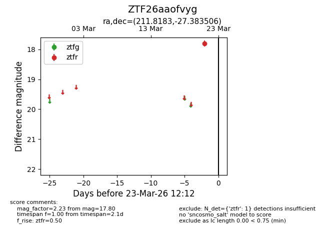
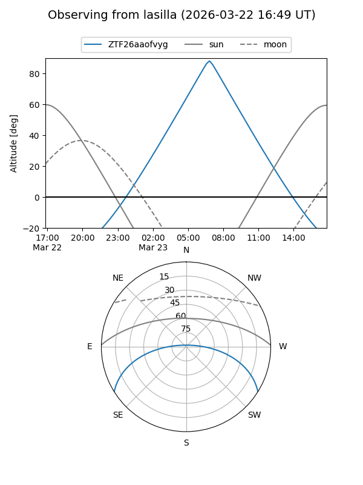
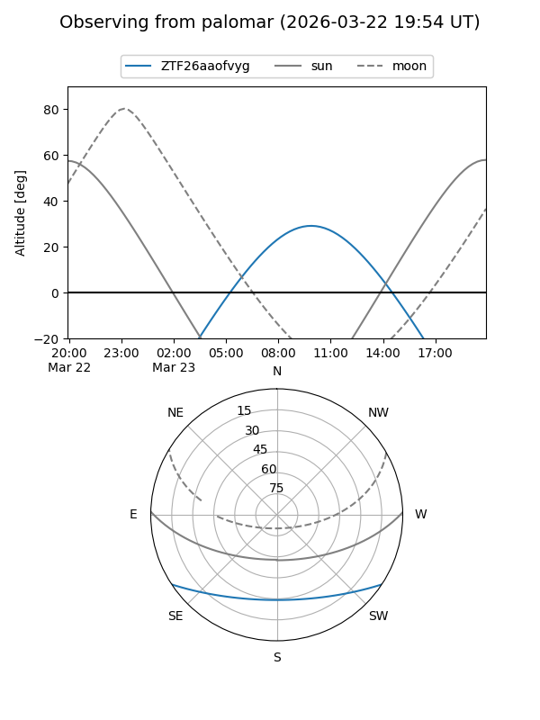

ZTF26aaofvyg
Target ZTF26aaofvyg at 2026-03-23 12:16
Aliases and brokers:
FINK: link
Lasair: link
ALeRCE: link
alt names
ZTF26aaofvyg (ztf,fink_ztf)
Coordinates:
equatorial (ra, dec) = 211.8183,-27.38351
equatorial (HMS+DMS) = 14:07:16.40,-27:23:00.62
galactic (l, b) = (322.9397,+32.52488)
Flags:
Photometry:
last ztfr=17.80
1 ztfr detections
Lightcurve

Visibility


Additional plots